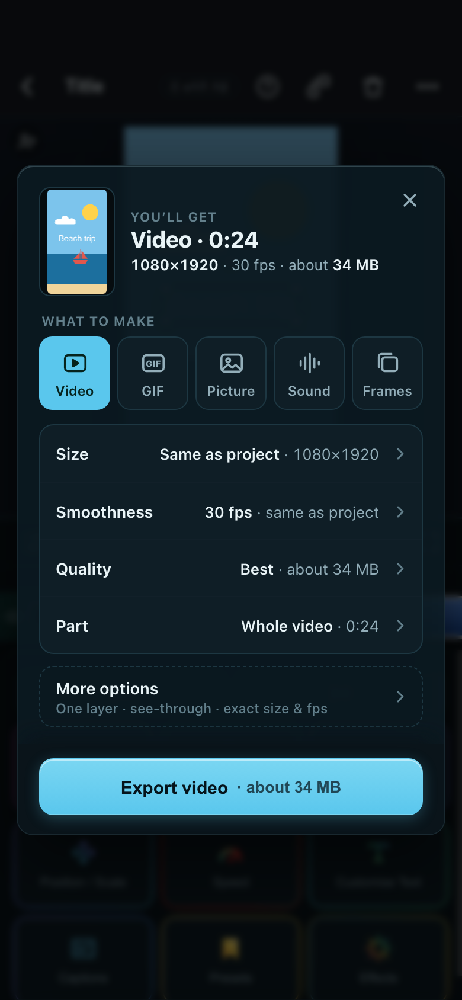
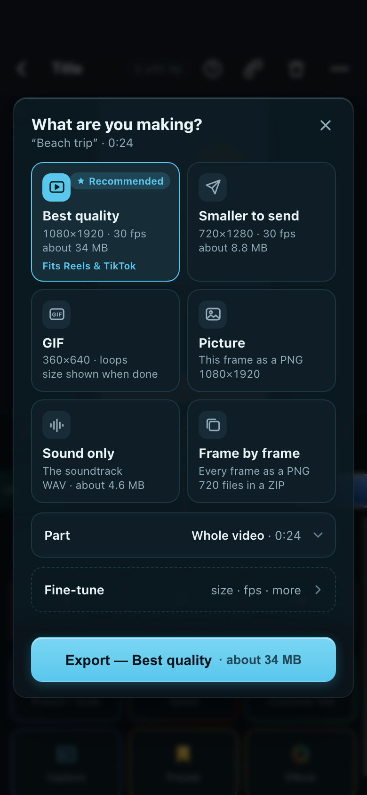
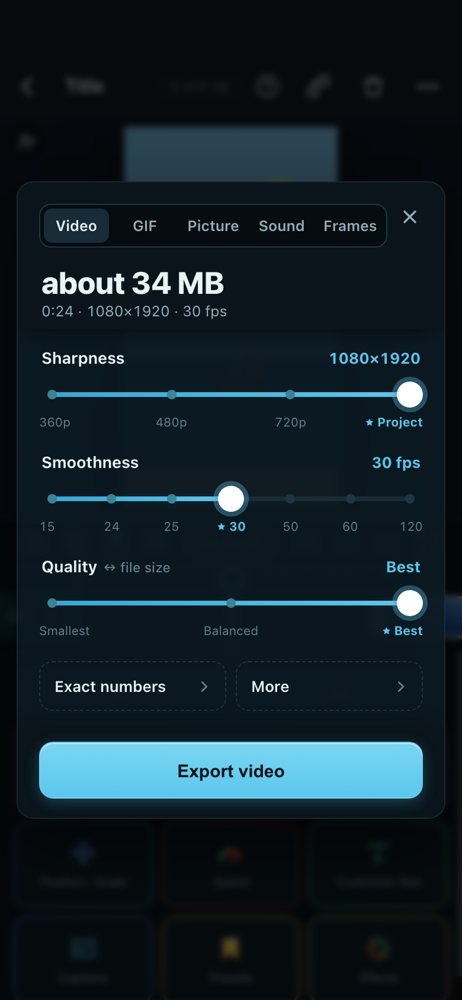

NowToday
Phone 390×844

What you see first: six equal dropdowns. No length, size or picture until it has rendered.
A · What you’ll get★ Recommended
Phone 390×844

What you see first: a picture, “Video · 0:24 · about 34 MB”, 5 buttons, 4 plain rows, one Export.
B · Pick a goal
Phone 390×844

What you see first: six goal tiles, each saying what you’ll get; then Part and Fine-tune.
C · Sliders + size
Phone 390×844

What you see first: the file size in big type, and three sliders with ★ on the recommended stop.